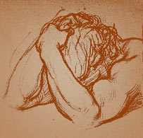

The pain is real: emotional pain = physical pain
The first step is to realize that the pain you feel is real. It's not just "in your mind". Rejection is a traumatic event as strong as any physical pain you can receive. In fact, the pain of rejection activates some of the same areas of the brain as physical pain.
There've been several studies based on MRI scans in the last decade showing that the areas of the brain activated when you are rejected are the same as when you suffer serious physical pain, such as being burned or punched violently. The stronger the rejection, the worse the pain you feel. And nothing can dampen the pain: those brain areas are triggered by rejection even if you get some other reward (freedom from your ex, a new partner, money) or even if you don't/didn't even really like the person who has rejected you.
[If you're interested in the science research, a good place to start is with the different works of the University of Michigan's Ethan Kross and the late Edward Smith of Columbia University (e.g., heartbreak shares similar brain effects with physical pains such as being burned), and UCLA's Naomi Eisenberger (e.g., the shared underpinnings of physical and social pain)].
Humans Evolved To Believe Rejection Could Lead To Death
The theory behind the pain of social rejection is that throughout ancient history, humans evolved to rely on their social group for basic needs: food, water, shelter, support, protection. You needed your social group, tribe and family in order to survive; you couldn't survive by yourself. Social rejection destroys your stability and way of life and could literally have been a death sentence during millions of years of human life. So the pain from rejection is your brain's way of telling you that you are in severe danger if you're alone and that you need to be re-accepted in order to survive.
It's obviously no longer the case that you will literally die of starvation or thirst if you get dumped in a romantic relationship. But the human brain still responds that way, which has very profound consequences for how we react to the end of a relationship.

Everyone reacts differently, but there are some very common effects which are frequently reported by those whose relationship has just ended:
Overwhelming need to get your ex back
Your brain is telling you that there is no hope in life unless you are re-accepted by the person who dumped you. It doesn't matter how wonderful your life is and what other great things you have going for you because you can't see them. All you can see and feel is the pain of rejection and the need to get back together. You feel that your life is over if you're not with that person. It's not rational, it makes no sense, but your brain is making you feel this way.
Physical body functions all messed up
Scientific studies of animals have found numerous situations where social rejection causes massive physiological problems with the body. There's less research on humans, but it appears we have very similar reactions. One area of much current research focuses on the effects of a hormone called oxytocin. Found only in mammals, it's associated with pair-bonding, maternal bonding, and social trust.Much is not known, individual differences are large, and there are many complications in interpreting about its effects. So beware of the many pseudo-scientific claims that are bandied about on the internet, as they're often not backed up by actual knowledge.
What is clear, though, is that social contact leads to oxytocin release, which is very rewarding to our brains and promotes bonding with others. The stronger and more important the bond, the more powerful the oxytocin reward we feel. To some extent at least, this drives social bonding through such instincts as trust, love, sexual desire, maternal caring.
But when you're rejected, the effects are powerful in the opposite direction. The bonding between you and your partner has literally created a physical dependency. So when you remove that dependency through a breakup, the physical effect is severe. Depending on your own physiology and the level of connection between you and your partner, the bio-behavioral response can range from small physical disturbances to a massive and long-term stress response.
It's not just in your head.
You can't sleep more than an hour or two at times, then at other times you can't do anything but sleep for days straight. You can't eat anything at all for days, but then you can't stop eating as you try to find your only happiness in calories. You can't move at all for a long time, feel so lethargic, completely numb and without energy, but at other times you're so anxious and nervous and stressed that you can't stop moving.
Constant obsession and thinking about your ex-
Literally every second of every hour of every day, you think about your ex. Doesn't matter what you're doing, who you're talking to, the only thing happening in your head that really matters is the non-stop thinking about the ex.Anything and everything reminds you of your ex and the relationship. When you do find someone who is willing to listen to your internal monologue about the ex, it feels right"... because by talking about it, at least it feels you're doing something to keep connected to the ex and keep it alive.
Feelings come & go in waves
Sometimes you're so sad you cry uncontrollably for long periods, then you feel utterly numb and without emotions. Sometimes you're filled with anger and rage at the ex, at yourself, and at the world, and other times you're exploding with the purest of unconditional love for the person who broke your heart.
Hate to be alone but little enjoyment being with others
At times you can't be bothered to even notice other people, while at other times you become an evil version of yourself yelling and sniping aggressively and violently at your friends and family. You want to talk all the time about your ex, the relationship and the breakup. But you get mad at others, you can't stand being with other people, no one gives you that feeling which you're convinced you need and which you're even more convinced can only come from your ex.
Loss of meaning
You question life in general and your life specifically. You don't understand the meaning of life. Everything is pointless. You fall into the depths of despair and existential angst. You moan that there is no reason to do anything. In many cases, you fall into true depression and seriously contemplate suicide, because you simply can't imagine the point of your life without the ex.
You fall into the depths of despair and existential angst. You moan that there is no reason to do anything. In many cases, you fall into true depression and seriously contemplate suicide, because you simply can't imagine the point of your life without the ex.
All these reactions are normal. Look on the bright side: they affirm that you're actually alive and that you're really a human. ;)
Everyone suffers the same: men, women, gay, straight
One note for the men: the pain is just as bad for men as for women. Because of social stereotypes and traditional gender roles, break-up pain is more associated with women. Men are supposedly strong, tough, not emotional, and aren't affected as much. “Be a man about it: hit the gym, have some beers, go sleep with a few other girls and you'll be fine” is the standard manly man's advice.
But that's just plain silly. Men suffer just as much when they're rejected, as shown by both the scientific research as well as the hundreds of messages from men on this site's comments page.  And sadly, men often have even less support from friends and family precisely because of the gender role stereotypes. Everything here applies equally well to men as well as women.
Also to note is that everything here also applies equally as well to same-sex relationships as it does to opposite-sex relationships. The pain of being dumped knows no limits based on gender or orientation. Rejection hurts no matter who you are.